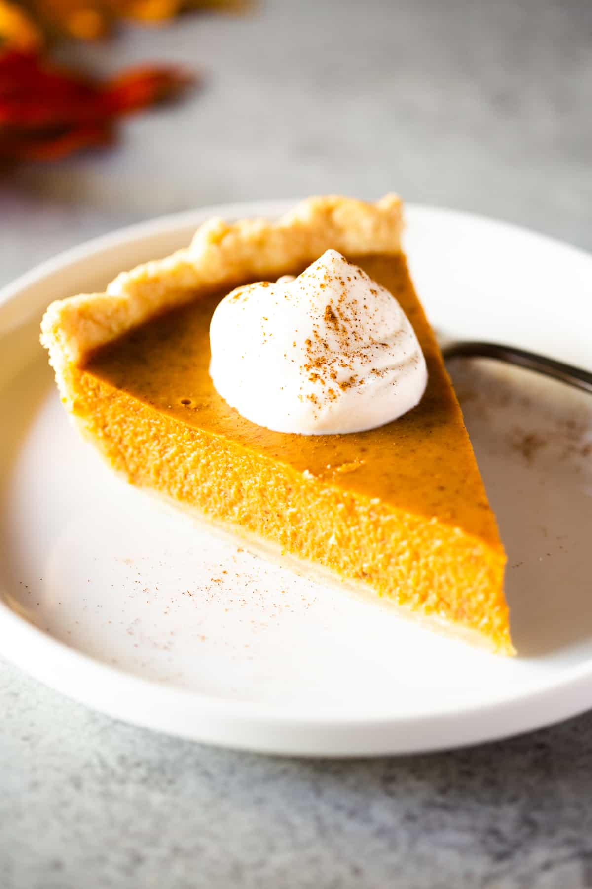

Pumpkin Pie

World famous pumpkin pie
A tried and true tasty dessert for any occasion
Ingredients
- 1 (15 ounce) can pumpkin puree
- 1 (14 ounce) can Sweetened Condensed Milk
- 2 large eggs
- 1 teaspoon ground cinnamon
- ½ teaspoon ground ginger
- ½ teaspoon ground nutmeg
- ½ teaspoon salt
- 1 (9 inch) unbaked pie crust
Steps
- Preheat oven to 375 F degrees.
- Whisk pumpkin puree, condensed milk, eggs, cinnamon, ginger, nutmeg, and salt together in a medium bowl until smooth. Pour into crust.
- Bake in the preheated oven for 15 minutes.
- Reduce oven temperature to 350 degrees F (175 degrees C) and continue baking until a knife inserted 1 inch from the crust comes out clean, 35 to 40 minutes.
- Cool before serving.